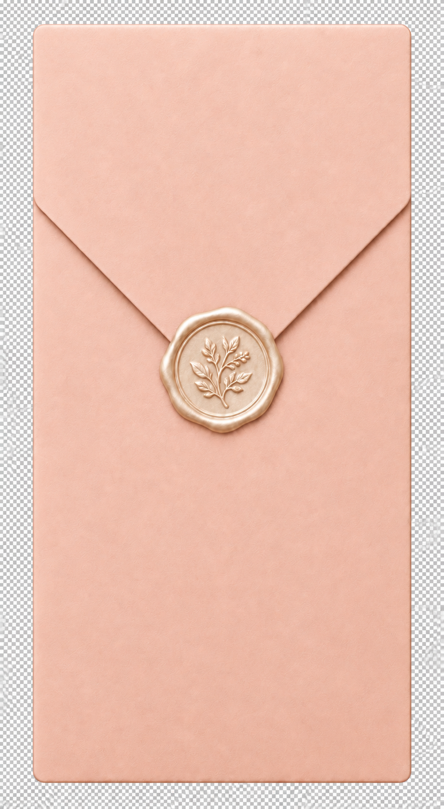
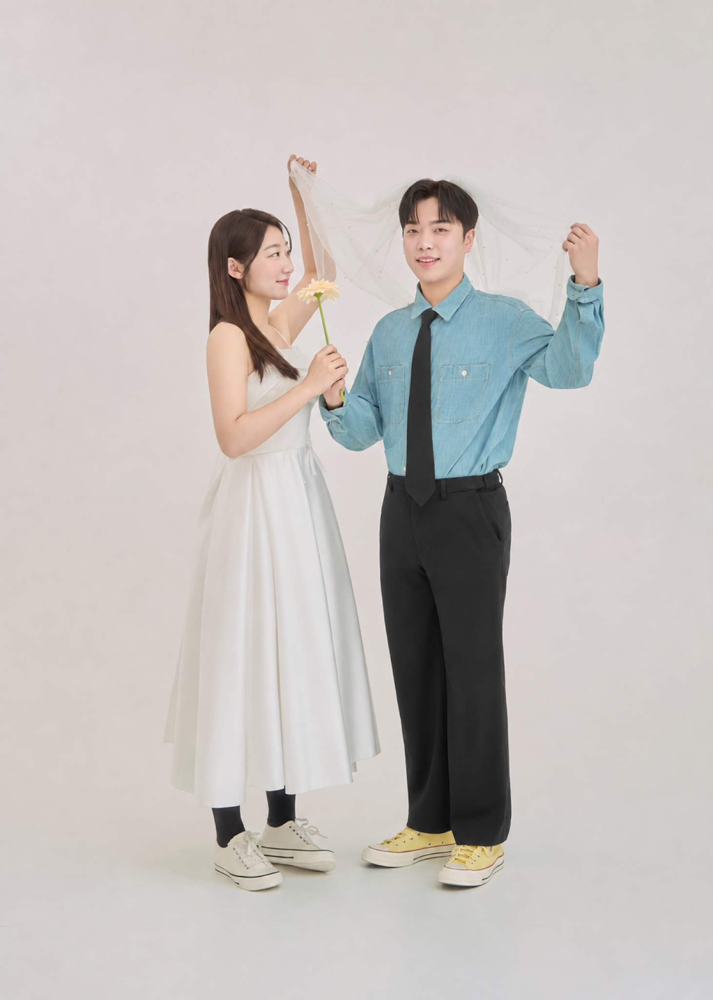

진환 ENFP
신랑이 신부에게 반한 이유
진환 & 수정
2027. 05. 08.토요일 결혼식에 초대합니다.
오후 3시 30분
문정역
루이비스컨벤션웨딩홀


OUR WEDDING DAY
우리의 봄날
서로를 바라보고 따뜻하게 지켜주는 순간들이 모여
저희의 가장 아름다운 계절이 되었습니다.
꽃이 피어나는 따뜻한 봄날 5월,
함께하는 첫걸음에 초대 드립니다.
우리의 봄날을 위한 음악
이 배경 음악은 신부가 직접 만들고 고른 곡입니다.
음악을 종료하시려면 정지를 눌러 주세요.
OUR WEDDING DAY
2027년 5월 8일
OUR MOMENTS
사진을 누르시면 크게 보실 수 있습니다.
사진을 누르신 뒤 아래로 스크롤해 더 많은 순간을 만나 보세요.
TWO OF US
신랑이 신부에게 반한 이유
신부가 신랑에게 반한 이유
A NOTE FOR US
첫 번째 축하 메시지를 남겨 주시면 감사하겠습니다.
WEDDING INFORMATION
WITH CONGRATULATIONS